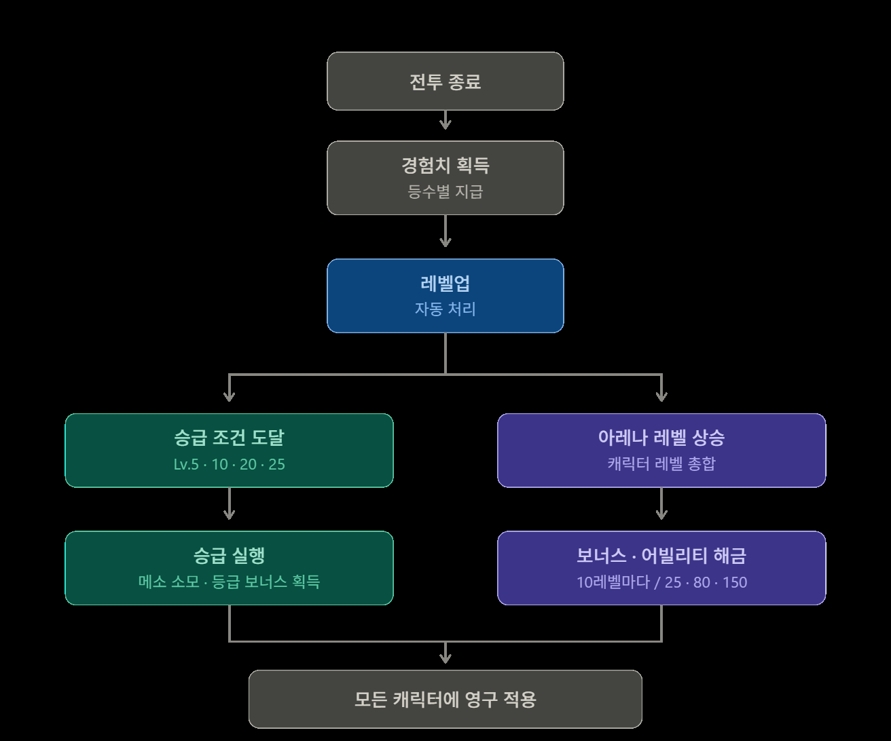

3.1 캐릭터 성장 구조
● 한 캐릭터의 성장이 모든 캐릭터에 적용
- 플레이어는 8종 캐릭터를 모두 보유한 상태로 시작하며, 캐릭터 뽑기는 두지 않는다.
- 전투 모드에서 캐릭터가 무작위 후보로 제시되므로, 특정 캐릭터를 키운 보상이 다른 캐릭터를 쓸 때도 같게 작동해야 한다.
- 경험치는 사용한 캐릭터에 쌓이고, 승급 보너스와 아레나 레벨 보너스는 모든 캐릭터에 영구 적용한다.
| 구분 | 획득 방식 | 보상 | 적용 범위 |
|---|---|---|---|
| 캐릭터 레벨 | 해당 캐릭터로 플레이해 경험치 획득 | 등급 승급 자격 | 해당 캐릭터 |
| 캐릭터 등급 | 승급 레벨 도달 후 메소를 소모해 승급 | 보너스 능력치 | 모든 캐릭터 |
| 아레나 레벨 | 캐릭터 레벨 총합으로 자동 산출 | 능력치 보너스, 어빌리티 슬롯 해금 | 모든 캐릭터 |

원본 기획서 수록 성장 흐름도
● 레벨과 경험치
- 레벨은 1~25다. 매치 종료 시 등수에 따라 1등 100, 2등 70, 3등 50, 4등 0의 경험치를 받는다.
- 요구 경험치를 채우면 연출이나 조작 없이 자동으로 레벨업하고, 초과분은 다음 레벨로 넘긴다. 만렙에서는 획득을 멈추고 MAX로 표시한다.
- 승급하지 않아도 경험치와 레벨은 계속 오른다. 만렙까지 총 5,000이며 한 캐릭터 기준 약 100판으로 설계했다(한 판 평균 50.4).
| 레벨 | 요구 | 누적 | 레벨 | 요구 | 누적 | 레벨 | 요구 | 누적 |
|---|---|---|---|---|---|---|---|---|
| 1 → 2 | 50 | 50 | 9 → 10 | 130 | 800, S | 17 → 18 | 255 | 2,420 |
| 2 → 3 | 60 | 110 | 10 → 11 | 150 | 950 | 18 → 19 | 270 | 2,690 |
| 3 → 4 | 70 | 180 | 11 → 12 | 165 | 1,115 | 19 → 20 | 310 | 3,000, SS |
| 4 → 5 | 70 | 250, A | 12 → 13 | 180 | 1,295 | 20 → 21 | 340 | 3,340 |
| 5 → 6 | 90 | 340 | 13 → 14 | 195 | 1,490 | 21 → 22 | 370 | 3,710 |
| 6 → 7 | 100 | 440 | 14 → 15 | 210 | 1,700 | 22 → 23 | 400 | 4,110 |
| 7 → 8 | 110 | 550 | 15 → 16 | 225 | 1,925 | 23 → 24 | 430 | 4,540 |
| 8 → 9 | 120 | 670 | 16 → 17 | 240 | 2,165 | 24 → 25 | 460 | 5,000, SSS |
굵은 값은 해당 등급의 승급이 가능해지는 지점이다.
● 등급과 승급
| 등급 | B | A | S | SS | SSS |
|---|---|---|---|---|---|
| 도달 레벨 | 1 | 5 | 10 | 20 | 25 |
등급은 5종, 승급은 4회다. B는 기본 등급이다. 레벨 도달만으로는 오르지 않고, 승급 버튼을 눌러 메소를 소모해야 반영되며 되돌릴 수 없다.